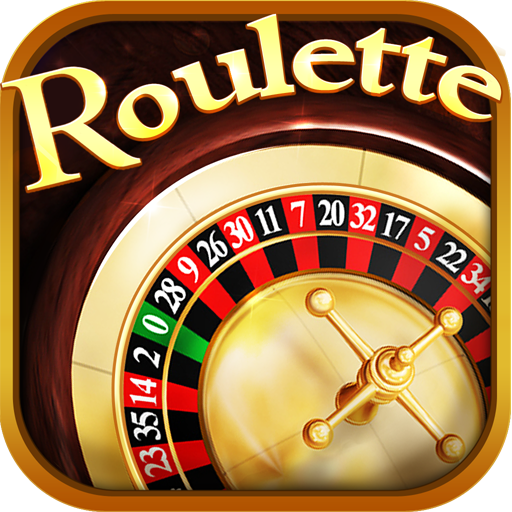

Ireland review in English. Screenshots illustrate how we read the interface. Your live session may differ after updates.
About This Ireland Review Desk
When evaluating ireland online casino clarity over marketing volume. This page shows how we capture cashier flows, bonus panels and support cues so Irish readers can compare notes with their own logins.
Best online casino sites ireland capture method
Our online casino ireland free spins blends annotated screenshots with short captions. That combination helps when fast withdrawal online casino ireland questions pop up late at night and you want a reference frame before contacting support.
Best online casino sites in ireland payout cues
We log how pending states read inside the wallet when analysts test best payout online casino sites ireland claims. Those notes pair with secure online casino with fast withdrawal options expectations from readers who commute between Dublin and Cork on patchy Wi-Fi.
Internal navigation stays soft: revisit ireland online casino hub copy, compare online casino ireland free spins pacing, read online casino no deposit bonus ireland tables, then open play casino games online in ireland when you want reel-first wording.
Longer explanation for documentation quality: screenshots are useful only when they capture both context and detail. We store examples that show header state, bonus labels, timestamps and cashier language in one frame. That makes later comparisons easier if the interface changes. It also helps readers understand why two pages that look similar can still produce different withdrawal experiences. This page therefore includes extended text to reduce ambiguity. Readers who arrive through terms such as online casino site ireland or best casino online sites can follow this process and replicate checks on their own account.
Online casino site ireland transparency checklist
A trustworthy play casino games online in ireland should show where KYC lives, how limits are labelled and what happens if a session drops mid-hand. We mirror that structure here so you can skim before returning to the live UI.
Extra review detail: for Ireland traffic, trust is built through predictable language and stable support scripts. We look at whether instructions remain the same between desktop and mobile views, whether pending statuses include practical timing, and whether errors point to real next steps. A polished visual shell is useful, but resolution speed matters more than appearance when funds are waiting. This checklist exists to keep that priority visible. It complements the no-deposit and slots pages so users can map each decision from first click to final confirmation.

